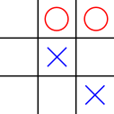

Exercici 02_37. El tres en ratlla en taulell¶
Exercici 02_37. El tres en ratlla en taulell¶
Context
Carpeta de lliurament:
02_37_tresenratlla_taulell/Continguts relacionats: Taules
Com lliurar-lo: instruccions
[✓] Exercici amb autoavaluació
Enunciat
Tornem a considerar l’exercici del tres en ratlla
En aquesta ocasió representarem tot el taulell, no amb variables separades
fila0, fila1 i fila2, sinó amb una taula de caràcters.
La situació inicial a representar serà:
{kind=link}
A banda, el programa demanarà quin és el següent moviment de les ㄨ i el coŀlocarà al taulell.
1 2 3 4 5 6 7 8 9 10 11 12 13 14 15 16 17 18 19 20 21 22 23 24 25 26 27 28 29 30 31 32 33 34 35 36 37 38 39 40 | /* XXX comentari adequat */
public class TresEnRatlla {
public static void main(String[] args){
// declaració del taulell
char[][] taulell = new char[3][3];
// inicialització de la fila 0
taulell[0][0] = /* XXX */;
// inicialització de la resta de files
/* XXX */
// mostra la posició inicial del taulell
System.out.println("La posició inicial del taulell:");
mostraFila(taulell[/* XXX */]); // mostra la línia 0
mostraFila(taulell[/* XXX */]); // mostra la línia 1
mostraFila(taulell[/* XXX */]); // mostra la línia 2
// demana coordenades del moviment del jugador X
System.out.println("Fila del següent moviment?");
int fila = Integer.parseInt(Entrada.readLine());
System.out.println("Columna del següent moviment?");
int columna = Integer.parseInt(Entrada.readLine());
// marquem el nou moviment
taulell[/* XXX */][/* XXX */] = 'X';
// tornem a mostrar el taulell
System.out.println("La posició final del taulell:");
/* XXX */
}
// mostra el contingut de la fila per sortida estàndard
public static void mostraFila(char[] fila) {
for (/* XXX */) {
System.out.print(fila[col]);
}
System.out.println();
}
}
|
Una simulació d’execució en la que guanya ㄨ seria:
$ java TresEnRatlla
La posició inicial del taulell:
·OO
·X·
··X
Fila del següent moviment?
0
Columna del següent moviment?
0
La posició final del taulell:
XOO
·X·
··X
Proposta de millora¶
El programa, tal i com implica la plantilla, confia plenament en que l’entrada que rep
sigui correcta. T’has preguntat què passaria si ens introdueixen la fila
42 o la -1 o la "primera"?
Si el teu orgull de programadora/programador no et permet fer un programa tan pobre, et proposo que li afegeixis les comprovacions necessàries perquè el resultat sigui més robust.